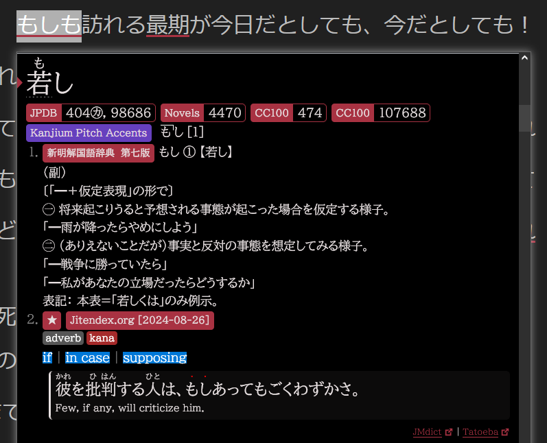

Notes on Grammar
We recommend you tread lightly when it comes to grammar. You may be accustomed to memorizing tables of conjugation in order to speak and write in your language classroom. This is the last thing we suggest you do. We think you'd be better off ignoring grammar entirely because this type of early output and high-cognitive-load activity is just begging to develop bad habits.
If you get enough comprehensible input you will be able to mimic what native speakers say. This will naturally lead to a higher quality of speaking and writing and is much more similar to what we do in our native language.
Grammar's Place
Optimally, you should still be using grammar resources... Just not in the way school has trained you to.
When you're immersing you will come across sentence structures you don't quite get, even if you know all the words. Often times the missing piece of the puzzle is grammar. You should absolutely be using grammar resources, but they will aid in your comprehension and understanding. Do not use them to force output. Do not use them to speak and write.
You will naturally acquire grammar in the same way you do words. In fact, you can almost think of grammar as a special type of word. Flashcards will be useful here, but keep in mind this is a temporary memory aid. Eventually you have to internalize the language. This is a necessary step to take before output.
If you want tools like this pop-up dictionary, sign up for our free mailing list.